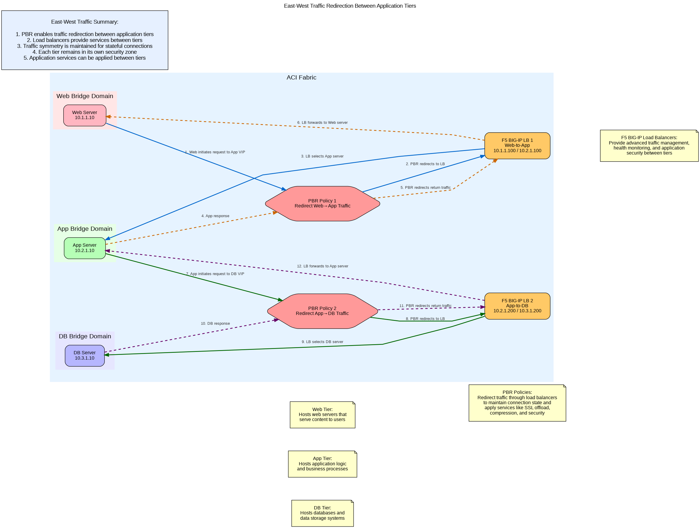
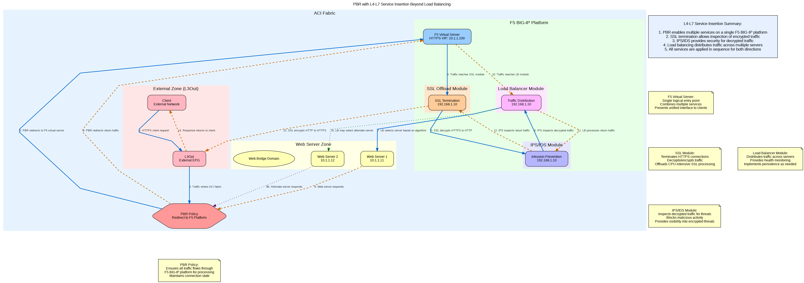

This interactive visualization allows you to explore different traffic flow patterns in Cisco ACI and F5 BIG-IP integration scenarios. Click on the tabs to view different diagrams, and use the flow control buttons to highlight specific traffic paths.
East-West Traffic Redirection Between Application Tiers
This diagram shows how PBR enables traffic redirection between application tiers (Web, App, DB). Select specific traffic flows to highlight them:
100%

Web to App Flow (Forward Path)
This flow shows how web servers communicate with application servers:
Web server initiates a request to the App VIP (10.2.1.100)
The request is intercepted by PBR Policy 1
PBR redirects the traffic to the F5 BIG-IP load balancer
The load balancer processes and selects an appropriate App server
Traffic is forwarded to the selected App server
This ensures that all traffic from Web to App tier passes through the load balancer for proper application services and security.
App to Web Return Flow
This flow shows how application servers respond back to web servers:
App server generates a response to the Web server
The response is intercepted by PBR Policy 1
PBR redirects the return traffic to the F5 BIG-IP load balancer
The load balancer processes the return traffic
Traffic is forwarded back to the Web server
This maintains connection state and ensures symmetric traffic flow through the load balancer.
App to DB Flow (Forward Path)
This flow shows how application servers communicate with database servers:
App server initiates a request to the DB VIP (10.3.1.200)
The request is intercepted by PBR Policy 2
PBR redirects the traffic to the F5 BIG-IP load balancer
The load balancer processes and selects an appropriate DB server
Traffic is forwarded to the selected DB server
This ensures that all traffic from App to DB tier passes through the load balancer for proper application services and security.
DB to App Return Flow
This flow shows how database servers respond back to application servers:
DB server generates a response to the App server
The response is intercepted by PBR Policy 2
PBR redirects the return traffic to the F5 BIG-IP load balancer
The load balancer processes the return traffic
Traffic is forwarded back to the App server
This maintains connection state and ensures symmetric traffic flow through the load balancer.
All East-West Traffic Flows
This view shows all traffic flows between application tiers:
Blue Arrows: Web to App forward traffic
Orange Dashed Arrows: App to Web return traffic
Green Arrows: App to DB forward traffic
Purple Dashed Arrows: DB to App return traffic
PBR ensures that all inter-tier traffic flows through the appropriate F5 BIG-IP load balancers, maintaining connection state and enabling application services between tiers.
PBR with Service Chaining (Multiple Services in Sequence)
This diagram shows how PBR enables traffic to flow through multiple security and application services in sequence. Select specific traffic flows to highlight them:
100%
Client to Firewall Flow
This flow shows the initial traffic path from client to the first service in the chain:
Client initiates a request to the application
Traffic enters the ACI fabric through the L3Out
PBR Policy 1 intercepts the traffic
PBR redirects traffic to the Next-Gen Firewall
Firewall performs security inspection
This ensures that all traffic is first inspected by the firewall for security threats before proceeding further.
Firewall to WAF Flow
This flow shows traffic moving from the firewall to the web application firewall:
Firewall completes inspection and forwards traffic
PBR Policy 2 intercepts the traffic
PBR redirects traffic to the Web Application Firewall
WAF performs application-layer inspection
After passing general security inspection, traffic is analyzed for application-specific attacks like SQL injection and XSS.
WAF to Load Balancer Flow
This flow shows traffic moving from the WAF to the load balancer:
WAF completes inspection and forwards traffic
PBR Policy 3 intercepts the traffic
PBR redirects traffic to the F5 BIG-IP Load Balancer
Load balancer processes the traffic
After security inspection, traffic reaches the load balancer for distribution to appropriate servers.
Load Balancer to Server Flow
This flow shows traffic from the load balancer to the web servers:
Load balancer selects an appropriate web server based on its algorithm
Traffic is forwarded to the selected web server
Web server processes the request
The load balancer ensures optimal distribution of traffic across available servers.
Return Path Flow
This flow shows how response traffic follows the reverse path through all services:
Web server generates a response
PBR Policy 3 redirects return traffic to the load balancer
Load balancer processes the return traffic
PBR Policy 2 redirects to the WAF
WAF inspects the return traffic
PBR Policy 1 redirects to the firewall
Firewall inspects and forwards the return traffic
Response returns to the client through the L3Out
This ensures symmetric traffic flow through all services in the chain, maintaining connection state and security inspection in both directions.
Complete Service Chain Flow
This view shows the complete traffic flow through the service chain:
Blue Arrows: Forward traffic path (client to server)
Orange Dashed Arrows: Return traffic path (server to client)
The Service Graph and PBR policies ensure that traffic flows through all services in the correct sequence, with each service focusing on its specific function. This creates a comprehensive security and application delivery solution.
PBR with L4-L7 Service Insertion Beyond Load Balancing
This diagram illustrates how PBR enables multiple services on a single F5 BIG-IP platform. Select specific traffic flows to highlight them:
100%

Client to SSL Module Flow
This flow shows the initial HTTPS traffic path from client to the SSL module:
Client initiates an HTTPS request
Traffic enters the ACI fabric through the L3Out
PBR Policy intercepts the traffic
PBR redirects traffic to the F5 Virtual Server
Traffic reaches the SSL Offload Module
This ensures that all encrypted traffic is first processed by the SSL module for decryption before further inspection.
SSL to IPS Module Flow
This flow shows decrypted traffic moving from the SSL module to the IPS/IDS module:
SSL module decrypts HTTPS traffic to HTTP
Decrypted traffic is forwarded to the IPS/IDS Module
IPS/IDS performs deep packet inspection on clear-text traffic
Decryption allows the IPS to inspect traffic that would otherwise be hidden by encryption, detecting threats that might be concealed in encrypted communications.
IPS to Load Balancer Module Flow
This flow shows inspected traffic moving from the IPS module to the load balancer module:
IPS/IDS completes inspection and forwards traffic
Traffic reaches the Load Balancer Module
Load balancer processes the traffic
After security inspection, traffic reaches the load balancer for distribution to appropriate servers.
Load Balancer to Server Flow
This flow shows traffic from the load balancer module to the web servers:
Load balancer selects an appropriate web server based on its algorithm
Traffic is forwarded to the selected web server
Web server processes the request
The load balancer ensures optimal distribution of traffic across available servers.
Return Path Flow
This flow shows how response traffic follows the reverse path through all services:
Web server generates a response
PBR redirects return traffic to the F5 platform
Traffic reaches the Load Balancer Module
Load balancer processes the return traffic
Traffic is forwarded to the IPS/IDS Module
IPS inspects the return traffic
Traffic is forwarded to the SSL Module
SSL encrypts HTTP back to HTTPS
Response returns to the client through the L3Out
This ensures symmetric traffic flow through all services on the F5 platform, maintaining connection state and security inspection in both directions.
Complete L4-L7 Service Flow
This view shows the complete traffic flow through the F5 BIG-IP platform services:
Blue Arrows: Forward traffic path (client to server)
Orange Dashed Arrows: Return traffic path (server to client)
Green Dotted Arrows: Alternative server selection path
Purple Dotted Arrows: Alternative server return path
The F5 BIG-IP platform provides multiple services (SSL offload, IPS/IDS, load balancing) on a single device, with PBR ensuring all traffic flows through the platform for comprehensive processing.
Multi-site PBR Configurations with Stretched VLANs
This diagram shows how PBR works in a multi-site environment with stretched network segments. Select specific traffic flows to highlight them:
100%
Site 1 Forward Path
This flow shows the traffic path from client to server within Site 1:
Client 1 initiates a request to the VIP (10.1.1.100)
Traffic enters the ACI fabric through the L3Out in Site 1
PBR Policy in Site 1 intercepts the traffic
PBR redirects traffic to the local F5 BIG-IP
F5 BIG-IP selects a local web server
Traffic is forwarded to the selected web server in Site 1
This ensures that traffic entering Site 1 is processed locally for optimal performance.
Site 1 Return Path
This flow shows the return traffic path within Site 1:
Web Server 1 generates a response
PBR Policy in Site 1 intercepts the return traffic
PBR redirects return traffic to the local F5 BIG-IP
F5 BIG-IP processes the return traffic
Traffic is forwarded back to the client through the L3Out in Site 1
This maintains symmetric traffic flow through the local F5 BIG-IP in Site 1.
Site 2 Forward Path
This flow shows the traffic path from client to server within Site 2:
Client 2 initiates a request to the VIP (10.1.1.100)
Traffic enters the ACI fabric through the L3Out in Site 2
PBR Policy in Site 2 intercepts the traffic
PBR redirects traffic to the local F5 BIG-IP
F5 BIG-IP selects a local web server
Traffic is forwarded to the selected web server in Site 2
This ensures that traffic entering Site 2 is processed locally for optimal performance.
Site 2 Return Path
This flow shows the return traffic path within Site 2:
Web Server 2 generates a response
PBR Policy in Site 2 intercepts the return traffic
PBR redirects return traffic to the local F5 BIG-IP
F5 BIG-IP processes the return traffic
Traffic is forwarded back to the client through the L3Out in Site 2
This maintains symmetric traffic flow through the local F5 BIG-IP in Site 2.
Cross-Site Connections
This flow shows the stretched objects and cross-site traffic possibilities:
Multi-Site Orchestrator synchronizes policies across sites
Stretched VRF provides common routing domain across sites
Cross-site client requests can be processed by either site
F5 BIG-IP can direct traffic to servers in either site if needed
While traffic typically stays local to each site for optimal performance, the stretched objects enable cross-site communication when necessary.
Complete Multi-site PBR Configuration
This view shows the complete multi-site environment with all traffic flows:
Blue Arrows: Site 1 forward traffic path
Orange Dashed Arrows: Site 1 return traffic path
Green Arrows: Site 2 forward traffic path
Purple Dashed Arrows: Site 2 return traffic path
Yellow Dotted Arrows: Cross-site connections and stretched objects
The Multi-Site Orchestrator provides centralized policy management, while local PBR policies ensure traffic stays within each site when possible for optimal performance. Stretched objects provide consistent addressing and policy application across sites.